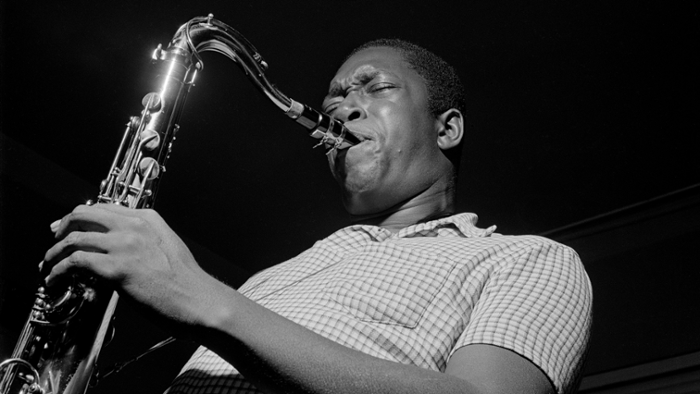

존 콜트레인
‘연주의 감동’을 창조한 대가인 존 콜트레인(John Coltrane)은 미국의 재즈 색소폰 연주자이다
노스캐롤라이나 주의 햄릿이라는 마을에서 태어났고, 그 곳에서 학교를 다니며 색소폰과 클라리넷 등의 연주법을 익혔다.
1945년에는 해군 군악대에 입대해 하와이 소재 해군 빅 밴드에서 연주했고,
1946년에 전역한 뒤 필라델피아 출신의 기타리스트 데니스 샌돌에게 재즈에 관한 체계적인 이론을 배웠다.
이후 이런저런 빅 밴드 등에서 연주 활동을 벌이다가 찰리 파커를 비롯한 신인 연주자들이 들고 나온 비밥에 푹 빠졌고,
이내 뉴욕을 거점으로 삼아 파커와 디지 길레스피를 비롯한 초기 밥 연주자들과 여러 세션이나 공연, 녹음에 참가했다.
1950년 초기에는 실력이 소니 롤린스보다 못해서 기가 죽어있었지만(마일스 자서전) 초인적인 연습량과 콜트레인만의 강한 캐릭터를 지닌 연주로 세기의 거인이 되었다.
존 콜트레인의 연주 스타일로 흥미로운 기법 중 하나로 Sheets of Sound가 있다.
단순한 코드 진행에 기본적인 화성과 더불어 다채로운 대리화음 등을 듬뿍 우겨넣어서 연주하는 기법이라 할 수 있다.
Russian Lullaby같은 업템포 이상의 곡만이 아니라 Someday My Prince Will Come 같은 느린 곡도 이렇게 연주한다.
특히 마일스 데이비스가 리드하는 Someday My Prince Will Come의 후반부에서 콜트레인의 색소폰이 등장하는 대목은 재즈팬이라면 전율할 대목.
하지만 강박적일 정도로 소리의 틈을 없애는 스타일과는 달리 색소폰의 톤은 매우 응집되어 있으며 따듯한 온기가 있다.
따라서 발라드 연주에서도 장기가 유감없이 발휘된다.
자니 하트만의 온기 넘치는 저음과 잘 어울리는 "John Coltrane and Johnny Hartmann
(쉽게 들을 수 있는 색소폰 소리 들어간 My One & Only Love는 거의 이 음반에 수록된 곡이다)"이나
"Ballads"같은 음반은 이지 리스닝으로서 자주 추천된다. 사실 진성 콜트레인 팬들도 프리재즈 음반들보다 이 발라드 음반들을 더 많이 듣는 편일 정도.
그래서 콜트레인 허락 없이 발매된 프레스티지반들이 아직도 재즈 발라드 음반 최고 판매량을 보여준다
그의 대표곡인 Giant Steps에는 재미있는 화성학적 일화가 있는데, 이 곡은 재즈 역사상 가장 혁신적이며 어려운 코드 진행중 하나인 콜트레인 체인지가 처음 적용된 곡이다.
콜트레인 체인지를 사용하면 단 3번의 전조만에 1옥타브를 진행시킬 수 있는데, 화성학의 가장 기본적인 도표인 cycle of 5th(5도권)으로
1옥타브를 진행시키려면 12 key를 한 번씩 다 찍어야 한다. 즉, 남들은 12걸음에 갈 길을 단 3걸음만에 갈 수 있다는건
그만큼 발이 커야한다는 뜻이기에 제목을 Giant Steps으로 정한 것이다.
그들의 음악에는 무언가, 마음을 관통하는 것이 있었다.
비슷한 예로 How High the Moon에 콜트레인 체인지를 적용시켜 탄생한 Satellite라는 곡이 있는데,
'지구에서 멀리있는 달(How high the moon)을 좀 더 가까이서 보기 위해(Coltrane change) 인공위성을 띄우자(Satellite)'라는 의미로 만들어진 곡이다.
그의 복잡하고 심오한 음악 세계를 알 수 있는 좋은 예시이다.